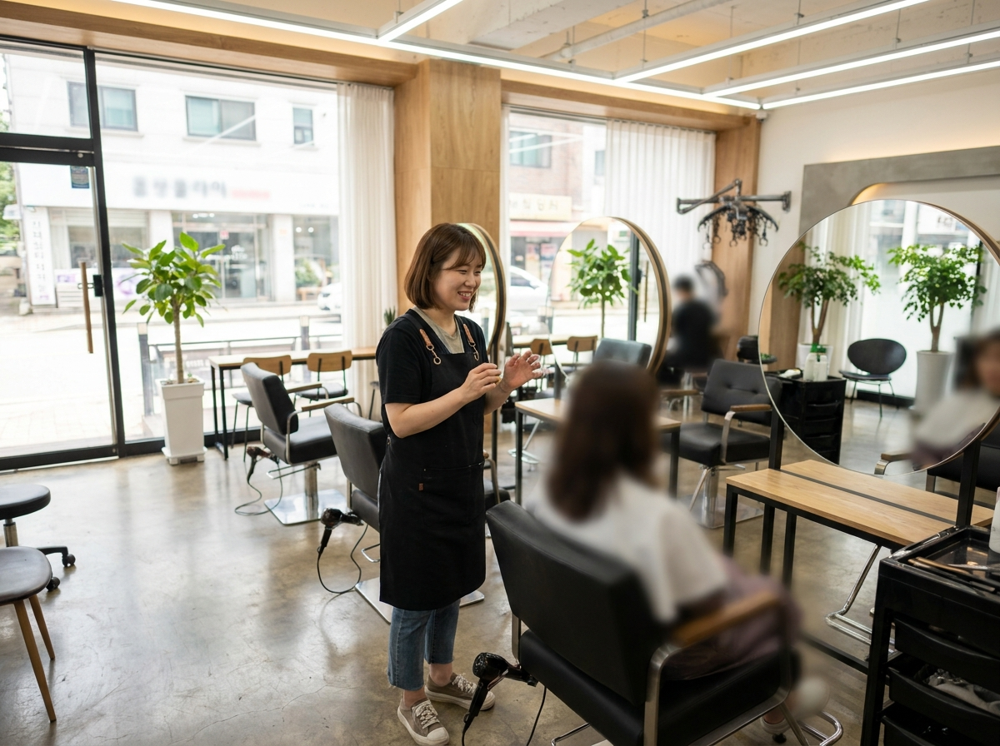
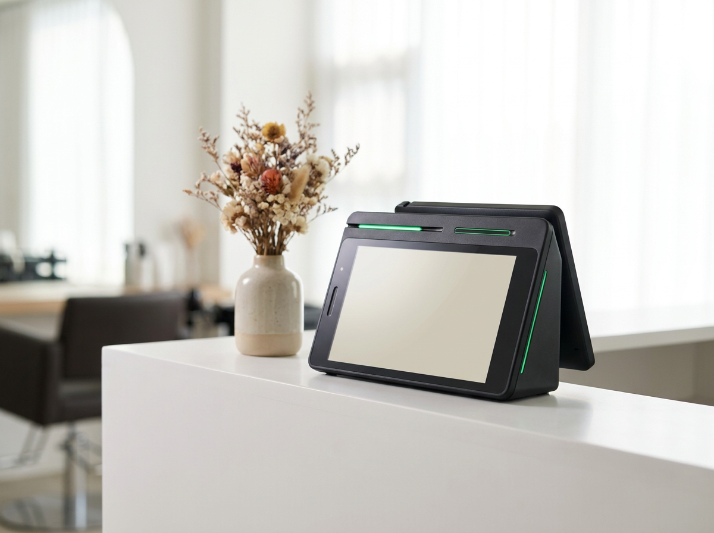

예약 손님 많은 미용실, 예약과 결제를 따로 관리하지 않으려면
결론부터 말씀드리면, 예약 장부와 결제 기록을 각각 따로 뒤지는 구조부터 정리하셔야 합니다. 예약은 휴대폰 알림으로 받고, 결제는 단말기로 하고, 매출은 밤에 다시 노트에 옮겨 적는다면 시간이 새는 지점은 늘 같습니다. 예약이 들어오는 창구와 결제·매출이 쌓이는 창구가 가까울수록 마감이 짧아집니다. 아래에서 예약 기반 매장이 어디서 시간을 뺏기는지 짚고, 그 흐름을 한 줄로 잇는 방법을 정리했습니다.
예약 받는 매장이 매일 겪는 세 가지 어긋남
첫째, 기록이 세 군데로 나뉩니다. 예약 시간과 시술 내용은 예약 앱에, 실제 받은 금액은 단말기 영수증에, 하루 합계는 수기 장부에 남습니다. 어느 손님이 어떤 시술을 받고 얼마를 결제했는지 확인하려면 세 곳을 모두 열어봐야 합니다. 손님이 적은 날은 견딜 만합니다. 하지만 예약이 촘촘한 날에는 이 확인 작업만으로 퇴근이 늦어집니다.
둘째, 예약 변경과 노쇼 대응이 늦습니다. 시술 중에는 전화를 받기 어렵습니다. 1인샵이라면 더 그렇습니다. 커트나 펌 중에 울리는 전화를 놓치면 그 자리는 그대로 빈 시간이 됩니다. 예약 변경 요청이 언제 들어왔는지, 어느 시간대가 비었는지 바로 보이지 않으면 다른 손님으로 채워 넣을 기회도 함께 사라집니다.
셋째, 매출 흐름이 늦게 보입니다. 이번 달 펌이 많았는지 염색이 많았는지, 재방문 손님 비중은 어떤지는 결제 기록이 정리돼 있어야 알 수 있습니다. 기록이 흩어져 있으면 결국 감으로 판단하게 됩니다. 시술 메뉴를 손보거나 예약 시간대를 조정할 때 근거가 부족해지는 이유입니다.

예약과 결제가 한 흐름이 되면 달라지는 것
핵심은 대단한 시스템을 새로 들이는 일이 아닙니다. 손님이 예약하고, 방문하고, 시술받고, 결제하고, 다음 예약을 잡는 한 바퀴를 같은 자리에서 확인할 수 있게 만드는 일입니다. 그러면 마감할 때 열어봐야 하는 창이 줄어듭니다. 데스크에 서서 확인하는 시간이 짧아지면 그만큼 손님을 보는 시간이 늘어납니다.
| 구분 | 따로 관리할 때 | 한 흐름으로 이을 때 |
|---|---|---|
| 예약 확인 | 휴대폰 앱을 수시로 확인 | 데스크에서 한 번에 확인 |
| 결제 | 단말기 따로, 기록 따로 | 결제와 기록이 함께 남음 |
| 마감 정산 | 영수증과 장부를 대조 | 남은 기록으로 바로 확인 |
| 노쇼·변경 | 뒤늦게 파악 | 빈 시간을 빨리 파악 |
| 손님 응대 | 시술 중 연락을 놓침 | 정리해 두었다가 응대 |
표로 정리해 보면 차이는 결국 확인하는 데 드는 시간입니다. 하루 10분씩만 줄여도 한 달이면 다섯 시간입니다. 그 시간이 시술 한 타임이나 제대로 된 휴식으로 돌아옵니다.
예약 받는 매장에 네이버단말기가 맞는 이유

미용실이나 네일샵처럼 예약으로 손님을 받는 매장은 네이버로 매장을 찾아오는 비중이 큽니다. 지도에서 위치를 보고, 후기를 읽고, 그 자리에서 예약을 잡는 흐름이 익숙해졌기 때문입니다. 그래서 결제 단말기도 네이버 생태계와 가깝게 쓰는 구성이 손에 붙습니다. 네이버단말기가 예약 기반 매장과 결이 맞는 이유가 여기에 있습니다. 손님이 매장을 찾은 경로와 결제까지의 동선이 크게 벌어지지 않습니다.
시작 부담도 적은 편입니다. 네이버단말기는 월 0원·약정 없음으로 시작할 수 있습니다. 이제 막 자리를 잡는 1인샵이나, 오래 쓴 단말기를 바꿔 볼까 고민하는 매장도 크게 마음먹지 않고 시작해 보실 수 있습니다. 카드 결제는 물론 삼성페이·애플페이 같은 간편결제까지 데스크에서 한 대로 받으실 수 있습니다.
다만 예약 연동의 세부 범위와 정책은 수시로 바뀝니다. 어떤 기능이 어디까지 연결되는지는 네이버 스마트플레이스 등 공식 채널에서 최신 기준을 확인하시길 권합니다. 사업자 등록이나 세무 관련 사항 역시 국세청 홈택스, 소상공인시장진흥공단, 관할 지자체 등 공식기관 안내를 별도로 확인하시는 편이 안전합니다. 저희 쪽에서는 상담 시 매장 상황에 맞게 어떤 구성이 적합한지 안내해 드립니다.
좌석이 많고 디자이너가 여럿인 매장이라면 포스와 함께 쓰는 구성을, 1인샵이나 소규모 매장이라면 단말기 한 대로 정리하는 구성을 권해 드리는 식입니다. 구성에 따라 달라지는 부분은 상담 시 안내해 드립니다. 누리네트웍스는 수도권 직영 설치·관리로 직접 방문해 설치하고, 설치 이후 문의도 같은 담당자가 받습니다. 정품 신제품 보증도 그대로 적용됩니다.
자주 묻는 질문(FAQ)
Q. 1인샵이라 시술 중에는 전화를 받기 어렵습니다. 방법이 있을까요?
예약을 받는 창구를 한곳으로 모아두면 시술이 끝난 뒤 한 번에 확인하고 정리해 응대하실 수 있습니다. 놓친 연락을 뒤늦게 찾아다니는 시간이 줄어듭니다. 매장 규모와 시술 시간대에 맞는 구성은 상담 시 매장 상황에 맞게 안내해 드립니다.
Q. 지금 쓰는 단말기가 있는데 바꾸면 번거롭지 않을까요?
설치와 초기 설정은 방문 담당자가 진행합니다. 수도권은 직영으로 방문해 설치하고 사용법도 현장에서 알려 드립니다. 기존 장비를 어떻게 정리할지도 상담하면서 함께 잡으시면 됩니다.
Q. 네이버 예약과는 어디까지 연결되나요?
연동 범위와 정책은 변경될 수 있어 이 글에서 단정해 말씀드리기 어렵습니다. 네이버 스마트플레이스 등 공식 채널에서 최신 기준을 확인하시고, 매장에 맞는 구성은 상담 시 안내받으시는 편이 정확합니다.
Q. 네일샵이나 속눈썹샵도 같은 방식으로 쓸 수 있나요?
예약을 받고 시술 후 결제하는 흐름이라면 업종이 달라도 구조는 비슷합니다. 좌석 수와 인원에 따라 단말기 한 대로 충분한 곳도 있고, 포스를 함께 두는 편이 나은 곳도 있습니다. 매장을 보고 판단하는 편이 좋습니다.
예약 매장 구성, 편하게 문의 주세요
예약과 결제를 따로 관리하느라 마감이 길어지고 있다면, 지금 쓰는 방식부터 한 번 점검해 보시길 권합니다. 매장 평수와 좌석 수, 하루 예약 건수 정도만 알려주시면 어떤 구성이 맞을지 함께 정리해 드립니다. 9,400여 곳의 계약을 함께해 온 경험으로, 주문·결제·정산 올인원 구성까지 필요하신 만큼만 제안해 드립니다. 급하게 결정하지 않으셔도 됩니다.
- 📞 전화상담 1544-7754
- 🌐 홈페이지 https://nwpos.co.kr

📷 인스타그램 팔로우 https://www.instagram.com/nurinetworkspos

▶️ 유튜브 구독 https://www.youtube.com/@nurinetworks